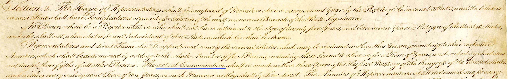
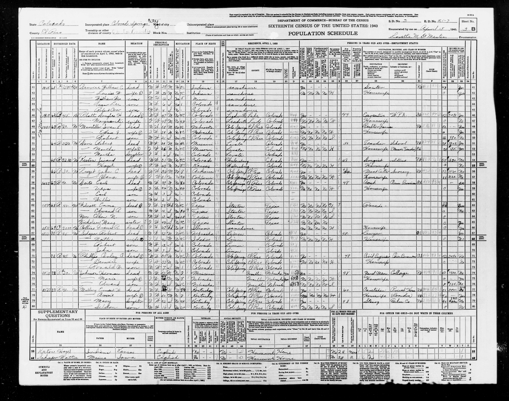
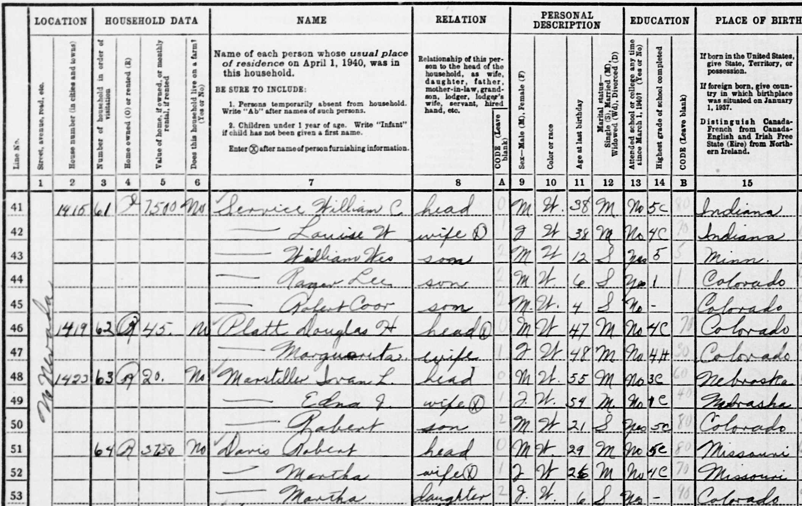

Project: Transcribing Data
In order to use data wrangling and graphics techniques, the data frames themselves must be properly formed. Unfortunately, most people are unfamiliar with the basic principles behind data-frame organization. Consequently, even machine-readable documents such as spreadsheets look organized but often contain flaws that prevent their full use as data.
This project is meant to help you internalize principles of proper data organization so that they become second nature to you. Another goal of the project is to develop your skills in recognizing spreadsheet pitfalls that interfere with wrangling. Finally, the project will introduce you to the concept of a relational database. We will not be making much use of relational databases in Math 300, but anyone literate with data needs to be aware of this critical and ubiquitous tool and why it is so important to working with data.
The project context: the US Census
As you may know, Article 1 Section 2 of the US Constitution requires that an “actual Enumeration” of all residents of the US be made every ten years.

A basic input to the census enumeration is the “population schedule,” which lists individual persons as rows in a spreadsheet. By law, the Census Bureau must keep private the information on individuals, and is not even able to share it with other government agencies. Only the summary tabulations made via data wrangling can be published.
However, 72 years after each census the population schedules can be released. In 2022, the population schedules for the 1950 census were released. We are going to use population schedules from the 1940 census, which are more accessible than the newly released 1950s sheets.

Figure 2 shows a population schedule from North Nevada Street in Colorado Springs, CO. This is a spreadsheet in the original sense of the word: a broad sheet of paper used for accounting.
Spreadsheet structure
We call a document like that in Figure 2 a “spreadsheet” because it is not yet organized appropriately for a data frame. (This is understandable, because the concept of relational databases originates in the 1970s. Today’s Census Bureau, like every data organization, uses relational spreadsheets.)
Figure 3 zooms in on the upper-left side of the sheet to make the structure more apparent.

A key aspect of data-frame organization is the idea of a “unit of observation”: the kind of thing represented by a row. Looking carefully at Figure 3, it is evident that each row corresponds to an individual person. For example, line 42 is about Louise W. Service, a 38-year-old married woman.
However, for many of the individuals, there are blank cells. Many of the names start with a long dash, as in . The point of such elisions is to avoid duplicating entries. For instance, Louise W. shares the last name of her husband, William C., as well as the same address, 1415 N. Nevada Street.
Avoiding unnecessary duplication is a fundamental principle in the organization of data.1 In 1940, avoiding duplication reduced the amount of writing needed for data entry. In the 2020s, avoiding unnecessary duplication is still important as a way of avoiding possible inconsistencies and making it clear that two or more cells must be identical.
The use of blanks or dashes in the spreadsheet is a common-sense way of indicating that information from one row is shared by an adjacent row. But it is not consistent with the proper organization of data frames and databases.
A fundamental, though unexpected and non-intuitive principle of data-frame organization is that the order of the rows does not matter. Instead, all information about relationships is represented by the data itself, regardless of order. This principle has important consequences for the organization of data and a major part of the motivation for relational databases.
A modern way to interpret what’s going on in the population schedule spreadsheet is that there are actually two different units of observation involved: i) the individual person and ii) the household. Since a data frame can have only a single unit of observation, representing the spreadsheet in a modern format will require two different data frames: one for the individual persons and another for the individual households.
The requirement that every data frame have its unit of observation provides many advantages. For instance, suppose it was realized after the data entry that the rent on the household’s home is incorrect. Fixing it can be accomplished by changing a single number in a single data frame. Or, consider what happens when it is discovered that a person was missed in the enumeration of a household. Adding this new person can be accomplished by appending a new row to the data frame containing individuals.
Tasks for the project
Note that you do not need to do any work in R for this project.
You will need two URLs and the pop_schedule_ID from this roster.
- Population schedule URL: links to an image of a population schedule. Download this to your laptop.
- Data entry URL: links to a Google sheet. You will edit the Google sheet from a browser on your laptop (or any other machine.) The Google sheet contains two tabs, for the household and the persons data frames.
- Fill in the household data frame first. You will need it for the persons data frame.
- Some of the population schedules are continued from a previous sheet. Start your transcription with the first complete household.
Data-entry tips
- When entering data for a categorical variable, decide on a set of levels before you start entering the data.
- There is a
household_IDvariable in both the households and persons data frames. Similarly, there is apop_schedule_ID. These must be absolutely consistent across the two data frames. - Each population schedule contains a column (#3) labeled “Number of household in order of visitation.” Use this as the
household_IDin your data frames. It is unique within the population schedule. Together with thepop_schedule_IDit is unique universally, since every population schedule has a uniquepop_schedule_ID. - In the persons spreadsheet, we have collapsed columns 21-25 into one multi-level categorical variable named
workplace. Read the column 21-25 headers to determine a set of levels that will properly encode the information in those columns.
Notes in draft for instructors
Google sheet for distributing population schedules and data-entry spreadsheets: https://docs.google.com/spreadsheets/d/1ZxbiNCKrGeCAqYTd1R9QLSRBLia9HBk4k8DxHxKqiok/edit?usp=sharing
An example data-entry spreadsheet: https://docs.google.com/spreadsheets/d/1nUMP1VQfTmhQy1q1sKGSlJ825GpnyXto8M8tkUhtUOU/edit?usp=sharing
Footnotes
An example of necessary duplication appears in lines 52 and 53, where two people happen to have the same name.↩︎